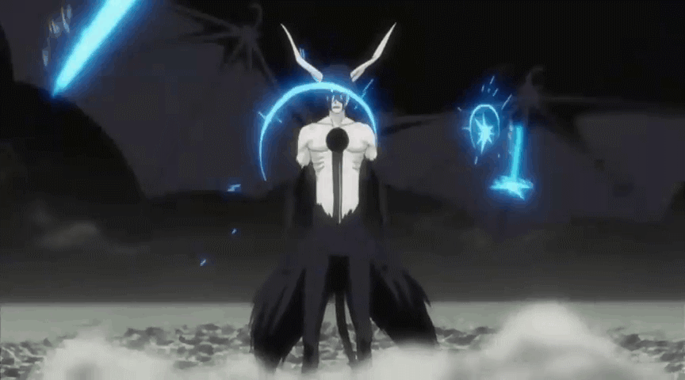

Ulquiorra (Bleach)

Ulquiorra Cifer is the 4th Espada in the anime series Bleach. He is one of the most powerful Arrancars in Sosuke Aizen's army, feared by both Shinigami and Hollows alike. Ulquiorra is a cold and calculating warrior, known for his emotionless demeanor and ruthless fighting style. He is a formidable opponent, capable of taking on multiple enemies at once and using his immense power to crush his foes.
Back to Main
Back to Top